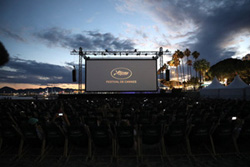
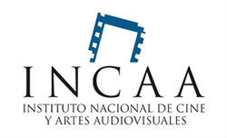

Festival de Cannes 2022: Toda la programación de Cinéma de la plage
Cada noche, a las 21.30, se proyectan de forma gratuita en una pantalla gigante ubicada en la playa clásicos como El Padrino, E.T.: El extraterrestre, This Is Spinal Tap y La última película.
Lunes 23
La Cour des miracles (Save Our School)
Dirección: Carine May y Hakim Zouhani 2022, 1h34, Francia
World premiere
Con las presencias de Carine May y Hakim Zouhani, y los actores Anaïde
Rozam, Sérigne M’Baye (Disiz la Peste), Gilbert Melki, Sébastien Chassagne y Mourad Boudaoud.
Martes 24
Strictly Ballroom. Dirección: Baz Luhrmann. 1992, 1h34, Australia. Con la presencia de Baz Luhrmann
Miércoles 25
Christophe… définitivement (Christophe… Definitely). Dirección: Ange Leccia y Dominique Gonzales-Foerster
2022, 1h26, Francia. Con las presencias de Ange Leccia y Dominique Gonzales-Foerster
El INCAA prorrogó la ayuda a rodajes y el Gobierno de CABA lanzó una promoción a filmaciones con inversión extranjera
Industria: El INCAA prorrogó la ayuda a rodajes y el Gobierno de CABA lanzó una promoción a filmaciones con inversión extranjera
-El Instituto lanzó un fondo de 800 millones de pesos para el segundo semestre del año.
-El gobierno porteño presentó la iniciativa BA Producción Internacional.
-INCAA. Según la Resolución 497/2022 publicada el en Boletín Oficial,
el INCAA prorrogó el FONDO DE ASISTENCIA PARA LA REACTIVACIÓN DE RODAJES,
destinado a la producción de películas nacionales que estén en condiciones de iniciar la
preproducción y/o el rodaje entre el 1° de julio de 2022 y el 31 de diciembre de 2022.
El fondo prorrogado en el artículo 1° estará integrado con recursos propios del INSTITUTO
NACIONAL DE CINE Y ARTES AUDIOVISUALES por hasta la suma de PESOS OCHOCIENTOS MILLONES ($800.000.000).
Guía de la Muestra Internacional de Cine Independiente de El Palomar 2022
El evento se realizará del 27 al 29 de mayo en el Cine Teatro Helios (Blvd. San Martín 3076, Ciudad Jardín, El Palomar) con entrada libre y gratuita.
Muestra Internacional de Largometrajes y Cortometrajes
-Crónicas de un exilio, de Micaela Montes Rojas y Pablo Guallar (Argentina, Perú, 2021, 93 min)
-Esquí, de Manque La Banca (Argentina, 2021, 74 min)
-Noh, de Juani Fernandez, Ignacio Ragone y Marcos Canale (Argentina, Japón, Alemania, 2021, 72 min)
-Excavar y recordar, de Pablo Salvador Boido (Argentina, 2020, 11 min)
-Sete anos em maio, de Affonso Uchôa (Brasil, 2019, 42 min)
-We love life, de Hana Vojackova (República Checa, 2022, 29 min)
-Un cráneo, de Mariano Cocolo (Perú, 2021, 4 min)
-Érase una vez en Quizca, de Nicolás Torchinsky (Argentina, 2021, 12 min)